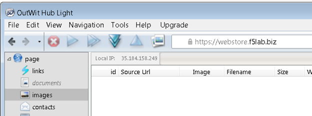
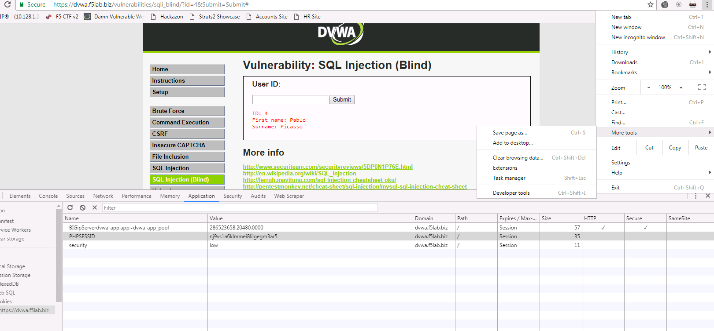

Community Training Classes & Labs > Pwn like a Hacker; Protect like a Pro Index
2.1.2.5. Capture The Flag:¶
It’s time for a game of Capture the flag where you will test your skills at both running and patching exploits. The “Capture the Flag” server and scoreboard is located at https://ctf.f5lab.biz. Please first visit the site to create a team name and have a look around. To complete a challenge, enter in the Flag you receive when successfully running or patching an exploit.
2.1.2.5.1. Hack and Patch¶
Note that each Mission is prefaced with [Hack] or [Patch].
2.1.2.5.1.1. Hacking¶
For the [Hack] missions, you will be attempting to run some sort of exploit. Some will require knowledge of programming or some serious Google-foo to make work. You MUST do these first in order to understand how the [Hack] works. Also, you need to run the [Hack] missions against the “Unprotected” VIPs.
2.1.2.5.1.2. Patching¶
For the [Patch] missions, you need to rerun the same Hack you did in the corresponding mission but against the “Protected” VIP which has a special ASM policy attached.
***** Do not create your own ASM Policies *****
The policies which are attached have been customized to integrate with our CTF API to show you the flags. Each “Protected” VIP has an existing ASM Policy attached to it, please ensure that you modify the proper policy for the VIP when you are attempting to get the patch flag.
2.1.2.5.2. Your First Hack and Patch¶
We will do the first one together… you’ll see how this works and we’re sure you will enjoy the rest of the class.
2.1.2.5.3. Useful tools¶
In order to complete the Capture the Flag, you will need some tools to view the requests/responses and to complete the Hack missions. Many of the tools you will need have been loaded onto the VMs you have access to. Some of them are explained below:
2.1.2.5.3.1. SQLmap¶
SQLmap is an open source penetration testing tool that automates the process of detecting and exploiting SQL injection flaws and taking over of database servers. It comes with a powerful detection engine, many niche features for the ultimate penetration tester and a broad range of switches lasting from database fingerprinting, over data fetching from the database, to accessing the underlying file system and executing commands on the operating system via out-of-band connections. Here is a link to the sqlmap documentation: Sqlmap Website
SQLmap is installed on the Kali Linux server.
2.1.2.5.3.2. Burp Suite¶
Burp Suite let’s you review/edit the data send and received among other things. It functions as a proxy, typically configured to listen on 127.0.01 loopback address. An application such as a web broswer or sqlmap is configured to use Burpsuite as a Proxy. This enables the review/editing of what is transmitted and received. Here is a link to Burpsuite downloads and documentation BurpSuite.
Burpsuite is installed on the Windows 7 Jumpbox.
2.1.2.5.3.3. Outwit Image Scraper¶
Outwit is a simple, straight-to-the-point online image browser. Explore the Web for pictures and easily create, save, and share collections. With OutWit Images, you can automatically explore Web pages or search engine results for pictures and create, save and share your collections or view them as full-screen slideshows.
Outwit is installed on the Windows 7 Jumpbox.
2.1.2.5.3.4. Edit This Cookie¶
EditThisCookie is a Google Chrome extension which allows the user to easily see and manipulate the cookies on the current page.
EditThisCookie is installed on the Windows 7 Jumpbox.
2.1.2.5.4. Completing the CTF¶
You can complete the CTF Contest without referring to the document here, however some of the challenges require some extra tools and some specific knowledge in how to use those tools. We have added this to the document here for you, allowing you to conduct the challenge by following the examples here. If you wish, you can do the challenges without these steps.
2.1.2.5.5. Challenge: Remote Command Execution¶
2.1.2.5.5.1. Level 1¶
Command injection is an attack in which the goal is execution of arbitrary commands on the host operating system via a vulnerable application. Command injection attacks are possible when an application passes unsafe user supplied data (forms, cookies, HTTP headers etc.) to a system shell. In this attack, the attacker-supplied operating system commands are usually executed with the privileges of the vulnerable application. Command injection attacks are possible largely due to insufficient input validation.
In this example, we have an application which uses a vulnerable version of the Struts2 library. This library has a vulnerability in the file upload component, allowing a properly formatted exploit to execute commands on the server. More can be learned about this vulnerability here: https://devcentral.f5.com/articles/apache-struts-remote-code-execution-vulnerability-cve-2017-5638-25617
Using the supplied exploit read the flag.txt file in the Tomcat7 folder.
2.1.2.5.5.2. Level 2¶
When there is a php application on a web server, typically credentials are stored within the application config in clear-text. Using this knowledge, the Struts2 vulnerability and the DVWA site, access the database for DVWA and get the flag from the database.
2.1.2.5.6. Challenge: Domain Cookie Exploit¶
One of the uses of Cookies is to track sessions and identify users. For example, once a user authenticates to a server, the server places a cookie on the user computer that identifies the user. The next time the user accesses the site, they will not be asked to authenticate – the server will check the cookie that identifies the user as authenticated, and allow the user in.
Cookie Hijacking is one of the attacks that can be executed to gain access to privileged information. In this exploit, an attacker would gain access to a cookie that contains user credential information, session information, or other types of information that identify a user to a system. Then the attacker would use this cookie (i.e. copy it to their computer) to gain access to the server.
F5LAB.BIZ is a company that offers financial services to customers. They have two services: hr.f5lab.biz (human resources services) and accounts.f5lab.biz (tax services). Both services use a common backend database to authenticate users.
2.1.2.5.7. Challenge: Webscraping¶
Webscraping is a popular technique used by both white and black hatters to “scrape” a website to harvest information from it. A good example of a mischievous webscraping activity would be a competitor scraping a website in order to harvest a product catalog or product prices. Once they obtain this information, they can gain intelligence about their competition and use it for their own ends.
There are a variety of tools out there to conduct webscraping. Some are off-the shelf and some are custom-developed. In either case, these tools are smart in that they know how to bypass the webscraping security controls – by modifying their traffic patterns (i.e vary the request rate and frequency to avoid detection)
Webstore.f5lab.biz is an online business that offers variety of products. It was detected that an attacker has mounted a webscraping attack against the website and is copying all the product images.
It was discovered that an attacker is using a popular scraping tool OutWit Hub:
2.1.2.5.7.1. The setup¶
Open OutWit Hub from the Start Menu
In the OutWit Hub GUI, go to Tools/Preferences/Exports & Downloads and specify a windows folder under “Save files in”
This folder is where the hacker (web scraper) will save the scraped images
Select Images on the left-hand panel in the GUI:

Note: The OutWit application is written in Java so it sometimes has a challenge with resizing on the RDP session. If you cannot see all the panels well (as in the screenshot below), please resize it and move the sections around in OutWit until it resembles what you see in the screenshot below):

The highlighted sections in the mage above show the settings that need to be set in order to continue with the exercise.
Tell the scraping tool to look for a file called flag-hacked.jpg. Finding this file will earn you a point:

Change the scraping settings in the tool’s GUI to Auto-Catch and Auto-Empty:

Make sure you tell the tool to Save the images which it finds:

train the tool on https://webstore.f5lab.biz:

Hit enter
First set of images should show in the OutWit Hub GUI.
Important: Make the scraper scrape the entire site by following all the site’s links. To do this, push the “Autoexplore the links on the page” button:

2.1.2.5.8. Challenge: BlindSQL Injection¶
Blind SQL (Structured Query Language) injection is a type of SQL Injection attack that asks the database true or false questions and determines the answer based on the applications response. This attack is often used when the web application is configured to show generic error messages, but has not mitigated the code that is vulnerable to SQL injection.
When an attacker exploits SQL injection, sometimes the web application displays error messages from the database complaining that the SQL Query’s syntax is incorrect. Blind SQL injection is nearly identical to normal SQL Injection, the only difference being the way the data is retrieved from the database. When the database does not output data to the web page, an attacker is forced to steal data by asking the database a series of true or false questions. This makes exploiting the SQL Injection vulnerability more difficult, but not impossible.
Putting it together: using SQLMAP with Burp. If dealing with clear-text http, you can just configure sqlmap to proxy thru Burp. If the site you are working with enforces SSL/TLS, within Burp: Proxy Options Proxy Listeners Request handling, select “Force Use of SSL”
2.1.2.5.8.1. SQL injection/BlindSQLI exploit¶
Web applications front-end access to back-end databases. Properly built applications will validate the input into form fields. A client will fill out a web form and the results will be submitted. With SQL injection exploits, SQL commands are submitted in via the web application forms. If the application is not validating the input (blocking actual SQL commands), then those will get submitted to the database and results can be returned. When testing a website for SQL injection vulnerabilities, errors may be returned from vulnerable websites that indicate the site is vulnerable and how to exploit it. Some websites may suppresses the error messages however. This makes SQL injection harder and what leads to Blind SQL injection.
SQLi exploits can be performed manually thru a web browser. While this can be useful to test a website, it can consume time to manually exploit a vulnerable website. This is where SQLmap can be useful as an automated method to make SQL injection easier. The SQLmap official website says:
SQLmap is an open source penetration testing tool that automates the process of detecting and exploiting SQL injection flaws and taking over of database servers. It comes with a powerful detection engine, many niche features for the ultimate penetration tester and a broad range of switches lasting from database fingerprinting, over data fetching from the database, to accessing the underlying file system and executing commands on the operating system via out-of-band connections.
The focus of this lab will be on the use of SQLmap to “map” the database, learning the databases, tables, rows and columns. Successful completion of this lab will result in retrieval of the usernames and passwords. In the database you will find the CTF token.
Proxying the requests thru Burp Suite will help to see and work thru the exploit. Later in this lab you can use Burp Suite to proxy the SQLmap requests to get a better view of what is actually being sent/received.
2.1.2.5.8.2. Executing the exploit¶
Connect to the jumpbox
Open Chrome and enable the developer tools (Control-Shift-I)
In order to use SQL map, you will need to gather a valid session cookie and the URL to test. The Chrome developer tools can help with this. Clicking on the Application tab of the developer tools will provide details on the cookies as well as other information,
Browse to the DVWA website via the bookmark
Click the SQL Injection (Blind) on the left side of the page and enter a number (4 for example) into the user id field and click submit.
With these details, we are able to construct the sqlmap command.
You can type “sqlmap.py –hh” for an extended list of the options.
Some of the options that will be of interest to us include: